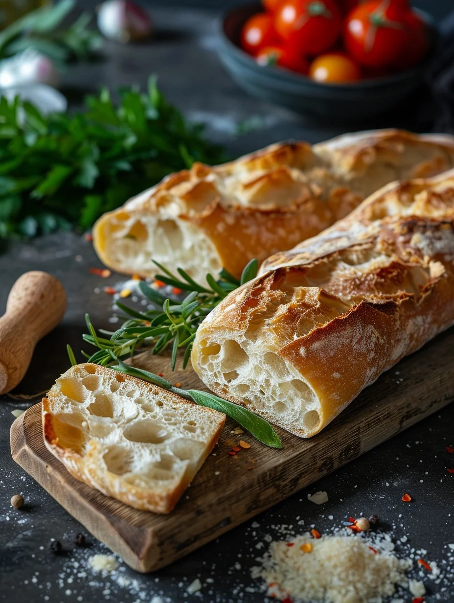
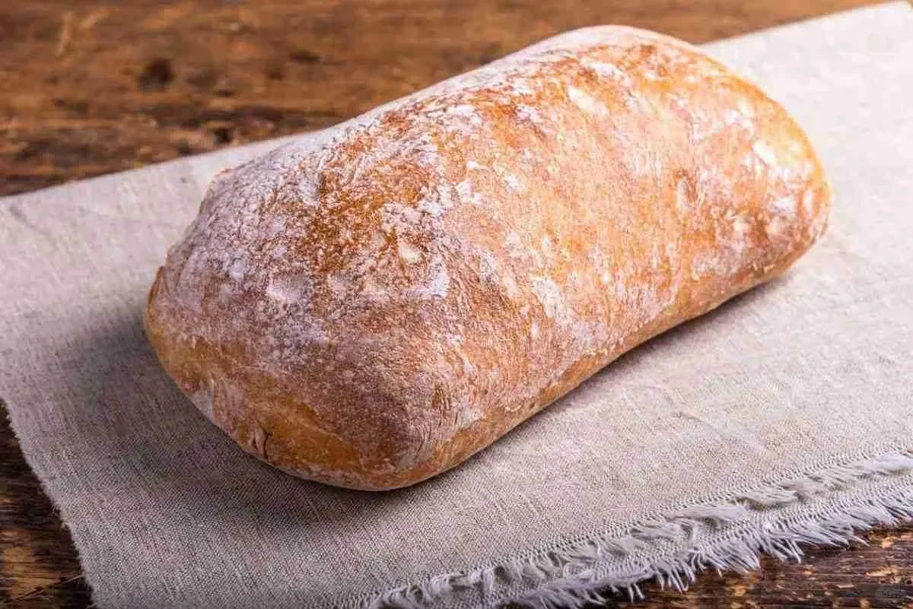
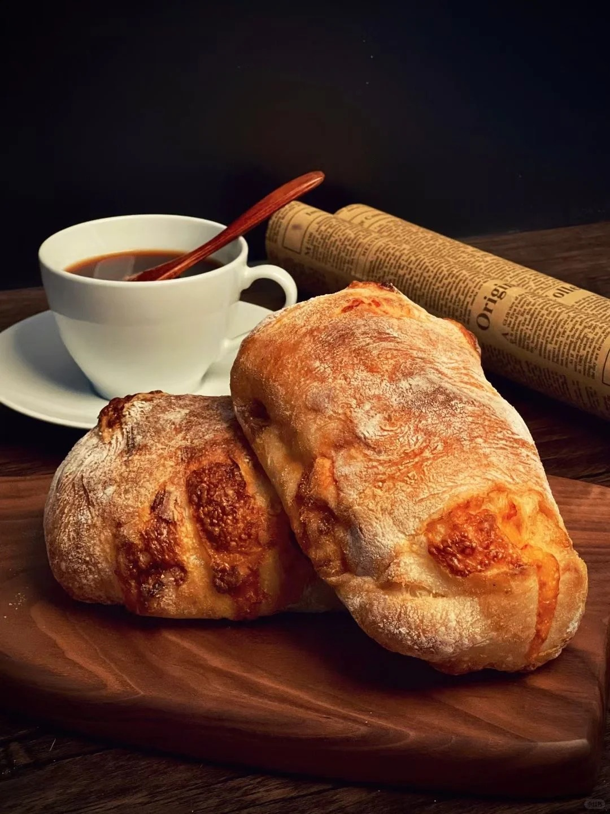

恰巴塔



恰巴塔诞生于 20 世纪 80 年代的意大利。当时，意大利面包市场竞争激烈，为了与法国法棍等外来面包竞争，意大利烘焙师阿尔纳尔多・卡瓦拉里（Arnaldo Cavallari）在传统面包基础上进行创新，研制出了恰巴塔。“Ciabatta” 在意大利语里是 “拖鞋” 的意思，因其外形扁平且不规则，与拖鞋相似而得名。恰巴塔面包形状扁平且不规则，表面粗糙，带有自然的起伏和褶皱，其外皮薄而酥脆，轻轻一咬便会发出 “咔嚓” 声，内部组织柔软湿润，有着不规则的大气孔，形成类似海绵的结构，口感柔软且富有嚼劲，每一口都充满了空气感，带有淡淡的麦香和发酵后的微酸味道，清爽开胃。 恰巴塔常被用来制作意式三明治，将其从中间切开，夹入火腿、奶酪、蔬菜、鸡蛋等食材，简单又美味。也可以直接切片，搭配奶油奶酪、牛油果泥等涂抹食用，或者搭配汤品、沙拉作为主食。